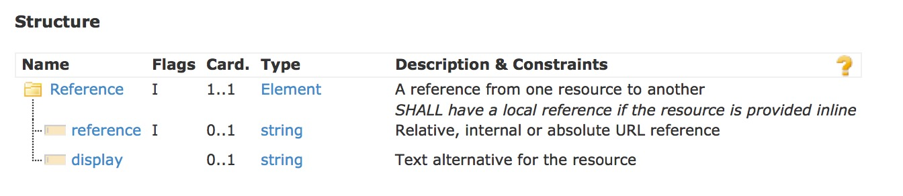
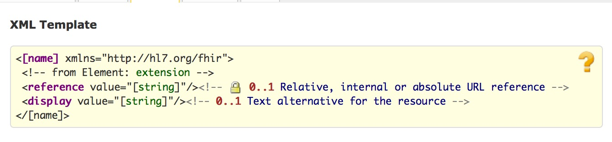
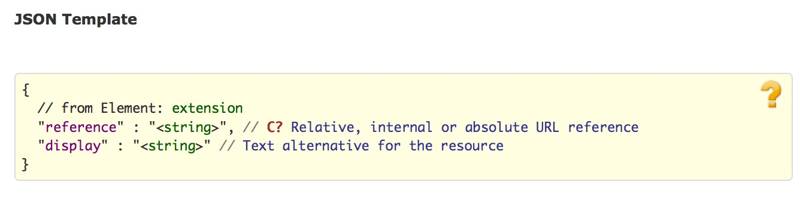

title:
date:
categories: doc
1.16.0 资源的引用
资源内的大多数元素都存在对其他资源的引用，通过这些资源间的引用，形成了一个巨大的信息web。
资源包含2种类型的引用:
- 内部“内嵌式”引用-references to other resources packaged inside the source resource
- 外部引用一 references from resources found elsewhere
引用通常是单方向的-从一个资源到另一个资源，从源到目标。引用通常是以URL形式提供的，可以是绝对URL，也可以是相对URL。
资源内部的许多已定义的元素都会引用其他资源.通过这些引用,这些资源能够整合成医疗保健的信息网络.
总是单向定义和标识引用-从源资源到目标资源.引用通过URL来标识,可能是绝对地址,也可能是相对地址.后面会继续讨论引用的解析.
逆向关系逻辑上也存在从目标资源到源资源的逆向关系,但是在资源中没有明确表示.浏览这些逆向关系需要一些外部的架构来追踪资源间的关系(REST API提供了这样的一种架构,通过对引用搜索变量的命名来搜索逆向关系)
由于资源是单独处理的,不能认为资源间的关系是具有传递性的. 比如,Conidition资源引用了一个patient作为对象,关联了一个procedure作为原因,并没有自动化规则或者说言外之意procedure的对象也是这patient. 反而,procedure的对象必须在procedure资源内明确指出. 另外一种方式是对象的语境并没有继承,也不会随着与procedure的关系而传递.这里仅有的例外在于是内嵌资源的情况.注意,在实践当中,关系必须要描述一个合乎逻辑和条理分明的记录。,在condition和procedure的案例中,常常要求对象是同一个病人,
在资源中，引用是用reference和文字描述来表示的。引用最关键的属性是 reference——资源是通过URL来标识和寻址的。实际的引用长得像如下：
Structure

UML
XML

JSON

注意:
- reference元素包含一个url,这个url可以是
- 使用绝对URL是一种稳定的 可扩展的方式,适合于云端/web应用,而使用相对URL/逻辑引用是一种灵活的方式,适合于封闭式的系统间互相交换的情况
- 尽管是首选方案,绝对URL不需要指向 FHIR RESTful server.无论引用是否指向Restful的FHIR服务器,引用都应指向该标准中定义的某个资源.
- 绝对地址不需要指向FHIR Restful服务器.
- URL总是大小写敏感的.
- 如果存在的话,display一般上和所引用资源的Resource.text的内容是不等同的.它的目的在于确定引用的是什么,而非完整的描述它.
在一个restful FHIR服务器上通过”context”元素对病人”034AB16”的相对引用:1
<context>
<reference value="Patient/034AB16" />
</context>
通过”profile”元素对结构化定义的绝对引用:1
<profile>
<reference value="http://fhir.hl7.org/svc/Profilec8973a22-2b5b-4e76-9c66-00639c99e61b" />
</profile>
注意 目前HL7还没有一个规范注册库,也没有一个确定的url.
display元素中可以提供一个供人可读的资源标识1
<custodian>
<reference value="Organization/123" />
<display value="HL7, Inc" />
</custodian>
当系统无法解析对应的资源时,系统可以利用这些文字描述.
1.16.0.1 内嵌资源
在一些情况下,资源引用的内容并不是能够脱离资源本身而独立存在的-它不能够被单独的标识,也不可能有它独立的事务范围.一般而言,这种情况是由于原始数据的二手用户对资源进行了组装,比如中间件引擎.如果在构建资源时没有包含记录主键或者绝对标识信息,那么就不可能得到一个准确标识的资源,即使将其与任意的标识关联起来,这个资源也永远不能脱离引用它的资源的语境而成为某个事务的对象。
比如,当某个接口引擎要通过一条V2消息构建某个病人的一条condition记录时,外科手术相关的仅有信息为她的姓名,如果没有可控的从业人员目录的话,就不足以创建一个可标识的Practioner资源 -同名同姓的医务人员可能不止一个。
在这样的情况下,资源是直接內联在资源内的.当内容能够准确标识时就不必这么做 因为一旦标识信息丢失以后,是极难再次恢复的
An example of a contained resource:1
<Composition xmlns="http://hl7.org/fhir">
<extension>...</extension>
<text>...</text>
<contained>
<Organization>
<id value="org1"/>
<!-- whatever information is available -->
</Organization>
</contained>
<information>
<!-- other attributes -->
<custodian>
<reference value="#org1" />
</custodian>
<!-- other attributes -->
<information>
</Composition>
```
The same example in JSON:
{ “resourceType” : “Composition”,
“extension” : { … },
“text” : { .. },
“contained: [
{
“resourceType” : “Organization”,
“id” : “org1”,
.. whatever information is available …
} ]
“information: {
… other attributes …
“custodian” : {
“reference” : “#org1”
}
… other attributes …
}
}
备注:内嵌资源仍然是一个引用,而不是直接内嵌到所引用元素上(比如上面的"custodian"),这样做是为了能够保证采用单一的方式来解析资源引用.尽管直接包含似乎会更简单些,当同样的内嵌资源引用不止一次时仍然会需要支持内在引用.最终,这样做会导致语法上的可选项.对于使用XPath处理资源的用户而言,如下的XPath能够解析内在引用:
ancestor::f:[not(parent::f:)]/f:contained/*[@id=substring-after(current()/f:reference/@value, ‘#’)]
对于内嵌资源的使用和解释要注意以下几点:
* "contained"元素不应该包含扩展(内嵌式的资源可以包含扩展)
* 内嵌资源和父资源拥有同样的内部id解析空间
* 内嵌资源不应包含另外的内嵌资源
* 内嵌资源不宜包含任何叙述性文本
* 內联资源同样继承了父资源的语境.比如,如果父资源包含一个"subject", 内嵌资源也同样拥有一个subject元素,但是并没有指明任何subject,处理程序可能会推理出二个subject是一样的.注意,然而,这些推理只是针对特定的场合.比如,并没有规则说明subject元素的含义在父资源和子资源中是一致的.
* 只有确实需要引用内嵌式资源的内容时方可在其他资源中纳入它。
> Constraints
ref-1: SHALL have a local reference if the resource is provided inline (xpath: not(starts-with(f:reference/@value, '#')) or exists(ancestor::f:entry/f:resource/f:*/f:contained/f:*[f:id/@value=substring-after(current()/f:reference/@value, '#')]|/*/f:contained/f:*[f:id/@value=substring-after(current()/f:reference/@value, '#')]))
#### 1.16.0.2 解析bundle中的资源引用
在处理bundle时,当遇到一个[资源引用](references.html#Resource),应用程序宜总是先在bundle中检索资源.
这样应用程序宜查找bundle中的每个entry,看看entry.id或者entry.link与reference url匹配:
.. bundle ..
… bundle …
```
在第二种情况下,是根据资源的特定版本来匹配的.如果bundle内部的资源引用不能够解析,应用程序宜能够通过提供的URL直接获取资源.如果不能的话,就必须使用其他方法来找到资源.
如果资源引用是绝对URL，可采用同样的基本原则：首先尝试在bundle内解析引用，然后再外面寻找。在此之前，要先拿绝对URL与Bundle.base中所生命的根路径比较，如果二者不匹配，资源引用不在bundle内部，。。。。。
© HL7.org 2011 - 2014. FHIR DSTU (v0.2.1-2606)构建于2014 7月2号 16:29+0800 星期三 .
链接：试行版是什么 |版本更新情况 | 许可协议 |提交变更建议